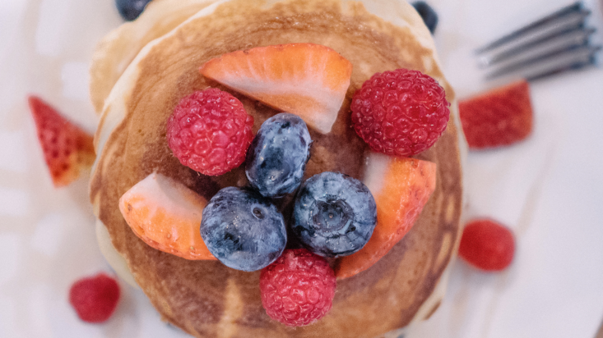

RECIPE LIBRARY
Enjoy this free online library of recipes also available in pdf.
You will find breakfast, lunch, dinner and healthy snacks as well as fruit and vegetable juicing recipes.

Almond Flour Pancakes
Prep Time: 10 minutes
Ingredients:
4 cups of Almond Flour
1 cup raw milk
1 Egg
2 tbsp butter
1/2 cup raspberries
1/4 cup blueberries
1/4 cup of cane sugar
Avocado Tomato Salad
Prep Time: 10 minutes
Ingredients:
1 medium sized Avocado
1 Small Roma Tomato
1 flour tortilla
4 oz. corn
1/4 cup of Cilantro
1/2 lemon
Salt & Pepper to taste
Chicken Fajita Wrap
Prep Time: 20 minutes
Ingredients:
2 - 8oz Chicken Breast
1 Small Roma Tomato
2 flour tortilla
1/2 cup tomato
1/4 cup of Cilantro
1/2 lemon
Salt & Pepper to taste
Berry Yogurt Delight
Prep Time: 5 minutes
Ingredients:
6oz plain greek yogurt
3 large Strawberries
1/4 cup Blue berries
Carrot Spice Juice
Prep Time: 5 minutes
Ingredients:
5 Carrots
1/2 Lemon
1/2 Green Apple
1 tsp of ginger root